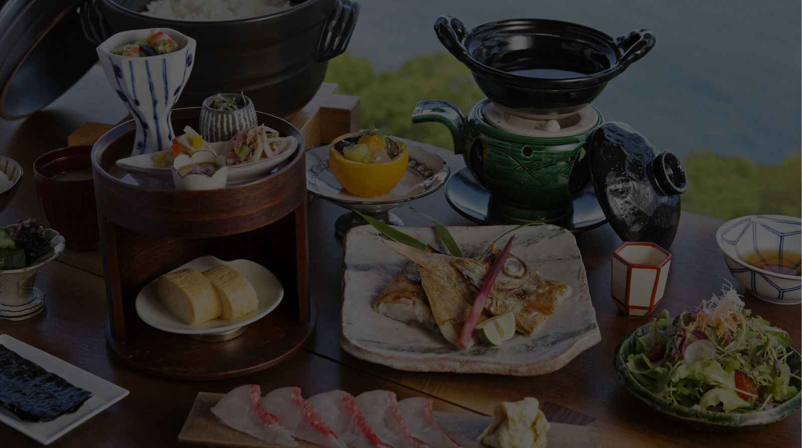
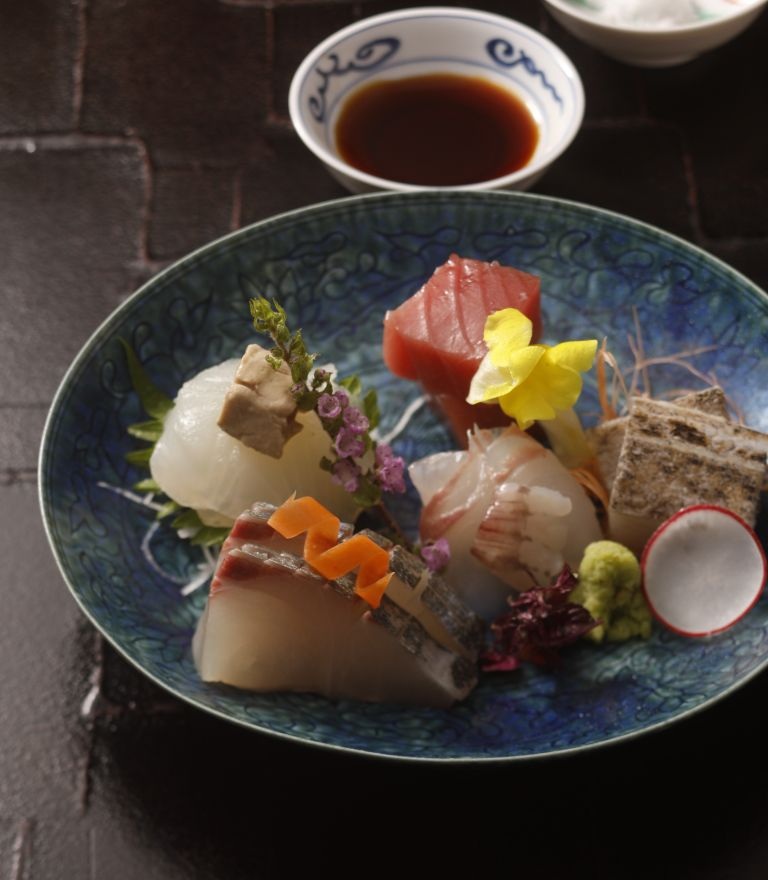
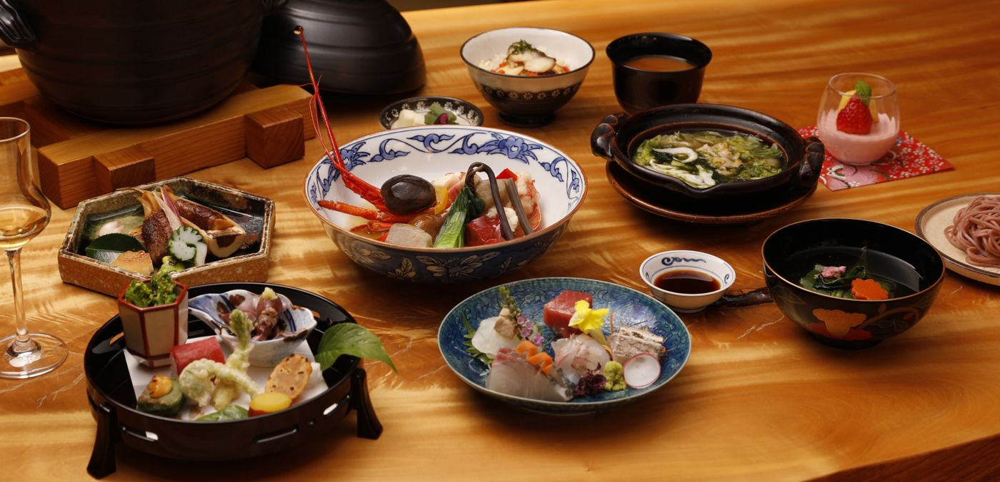
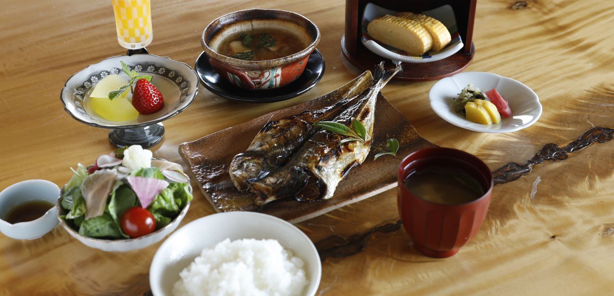
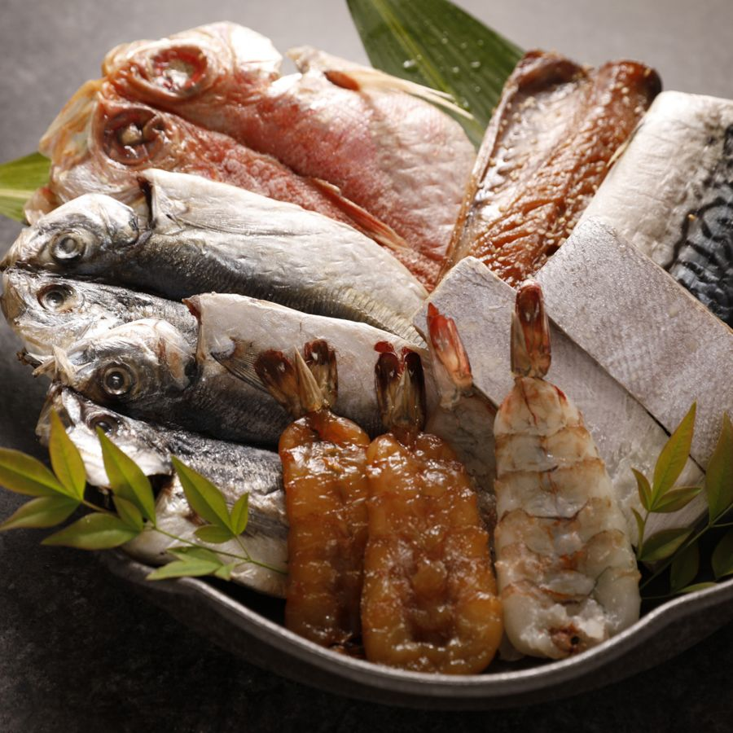

【食事】
旬の恵みを相模湾とともに
Seasons on a plate,
the sea beyond.
洗練と地の味わいを融合。
伊豆の幸を食べつくす
地物、伊豆産を中心に、
その日の最高の食材を使った、
山龢の日本料理です。
こだわりの出汁で、
素材の持ち味を最大限に引き出します。

( Dinner )
ご夕食
この一夜にふさわしい一席をご用意しております。選び抜いた旬を、ひと皿ずつ。

- お食事開始時間
- ご夕食の開始時間はチェックイン時に17:30 ／ 18:00 ／ 18:30よりお選びくださいませ。お食事の時間はおよそ2時間です。
18:30以降にご到着の場合は、お手数ですが事前にご連絡をお願いいたします。ご連絡がない場合、夕食のご用意が難しくなる場合や、食品衛生上の観点から生ものを除いたお料理となることがございます。※その際は御代金の割引等は一切出来ません事御理解の程宜しく御願い致します。
( Morning )
ご朝食
目覚めた瞬間から、旅はまだ終わらない。朝の食卓にも、熱海の海をそのまま並べました。「山龢」でしか味わえない、もうひとつの絶景を。

- お食事開始時間
- ご朝食の開始時間はチェックイン時に8:30 ／ 9:00 ／ 9:30よりお選びくださいませ。お食事の時間はおよそ1時間です。
ゴルフ等でご出発が早いお客様はご予約時にお気軽にご相談下さいませ。

耳を澄ませる、
朝のごちそう
肉厚で旨み豊かな〘ふじま〙の干物を、当館にて丁寧に焼き上げ、朝食でお出ししております。焼き上がる音、包丁を入れる音、立ちのぼる香り。静かな朝のひとときに、耳を澄ませてお楽しみください。